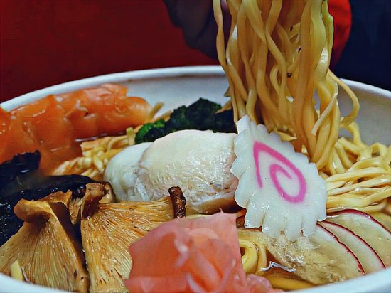

Ichiraku Ramen

Ever want to eat Naruto's favorite ramen? Here's how!
Ingredients
- red miso
- white miso
- mugi miso
- whole slab of prok belly (chashu)
- ginger
- garlic
- scallion
- shoyu
- sake
- sugar
- water
- shoyu
- mirin
- togarashi
- sesamen seeds
- niboshi
- eggs
- ice bath
- pork femur bones
- chicken carcass bones
- chicken feet
- prok fat back
- cabbage
- onion
- carrot
- half an apple
- potato
- dashi
- kombu
- dried shiitake mushroom
- dried bonito flakes
- narutomaki
- ramen noodles
- nori sheets
- bamboo topping (menma)
Steps